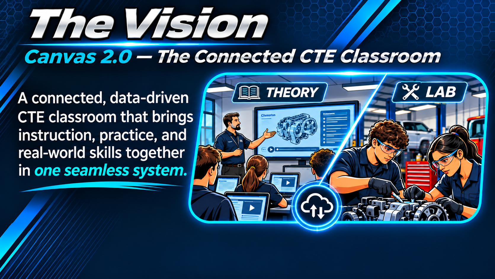
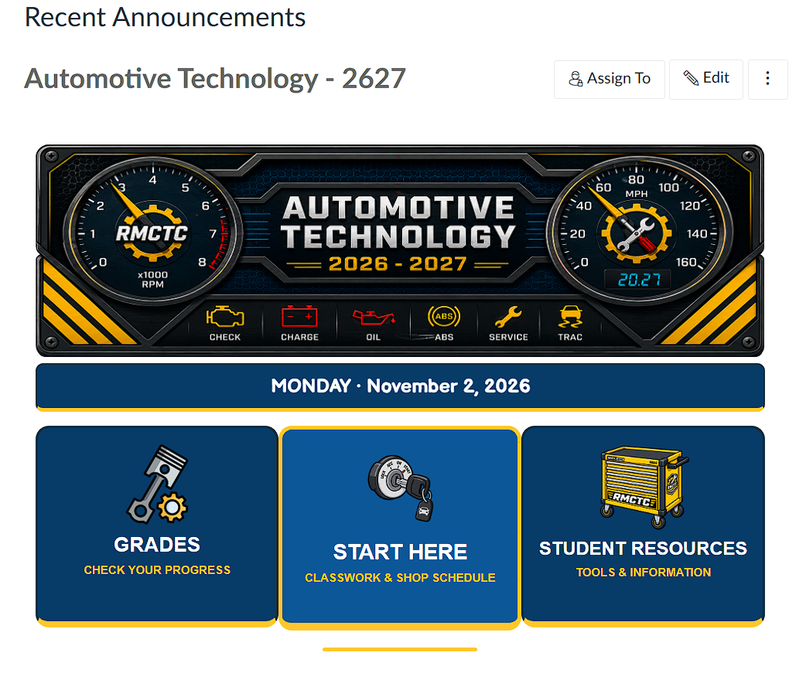
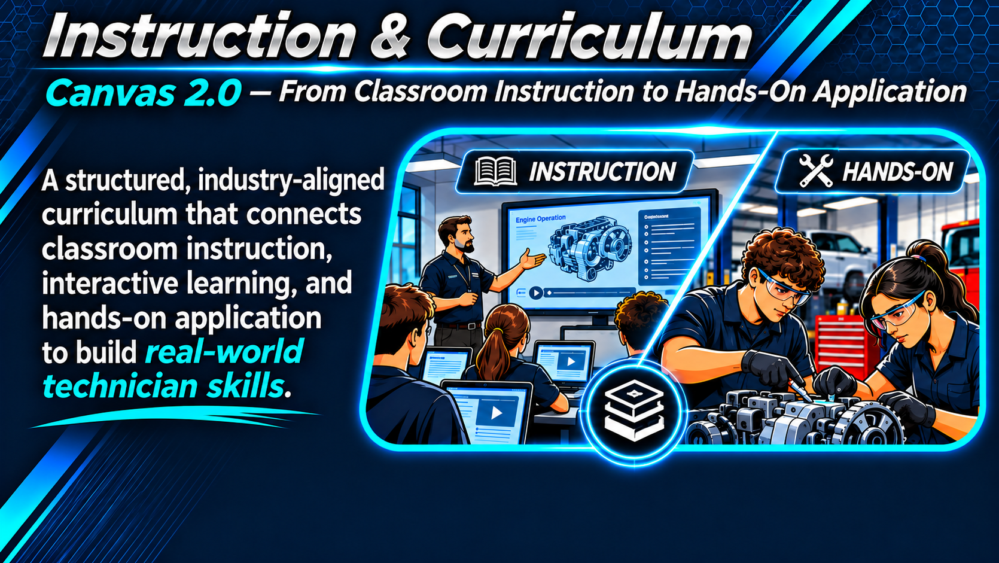
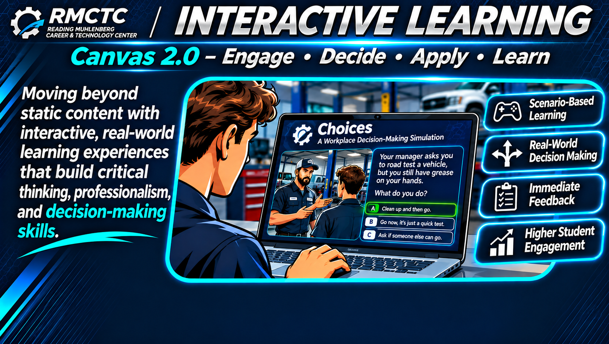

A unified learning environment bringing together instruction, student engagement, classroom management, and real-world CTE experiences.
Explore the Classroom
SELECT A SYSTEM TO EXPLORE →

CANVAS 2.0 / THE ACTUAL STUDENT EXPERIENCE
Course Structure & Student Experience
Follow the same path students use to move from the course homepage to their daily learning activity. These are screenshots of the actual Automotive Technology course.
STEP 1 OF 4
The Course Homepage
ACTUAL COURSE SCREENSHOT
A visual homepage gives students three clear destinations: Grades, Start Here, and Student Resources.

Click the highlighted Start Here tile in the screenshot, or select Next Step.


LIVE DEMONSTRATION
Learning by Doing: Choices
Explore a workplace decision-making simulation where students consider realistic shop situations, choose how to respond, and experience different outcomes.
A connected classroom extends beyond delivering assignments. These tools support workplace routines, equipment accountability, and intentional access to instructional content.
◷
WORKPLACE READINESS
Student Timeclock
Students clock in and out as part of their daily routine. Recorded time supports conversations about punctuality, participation, and professional responsibility.
Integrated into the Daily Agenda · Clock In / Clock Out
Modules organize learning into a deliberate sequence. Instructors can publish or unpublish content, set availability and prerequisites, and use requirements to guide student progression.
✓
Orientation & SafetyAvailable to students
Published
✓
Engine FundamentalsCurrent learning unit
Published
🔒
Advanced DiagnosticsNot yet available
Restricted
Illustrative example—not a screenshot of your course
Canvas 2.0 principle: Students see the right tasks at the right time, while classroom routines and shop responsibilities remain connected to instruction.